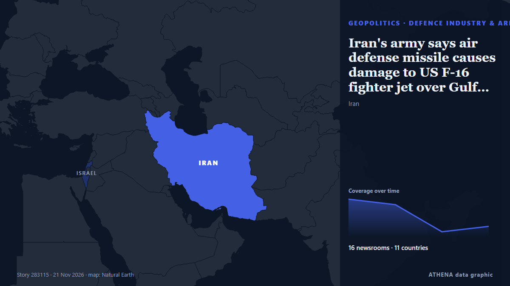

ATHENA Glaux Intelligence — Veille mondiale de l'information — chaque chiffre expliqué
Chaque titre, vérifié dans plusieurs pays.
ATHENA Glaux suit 635 médias dans le monde. Une information devient un événement vérifié seulement lorsque des médias indépendants la rapportent. Chaque événement indique qui l'a publiée en premier et un score de risque avec ses raisons.
Séisme ou inondation près de chez vous cette semaine ?
Saisissez votre ville et voyez les séismes, inondations, tempêtes et alertes officielles à proximité, avec une liste du kit d'urgence 72 heures. Gratuit, sans inscription, et votre lieu reste sur votre appareil.
Des articles arrivent de médias indépendants : quand deux se rejoignent sur la même histoire, un événement vérifié naît.
Comment ATHENA vérifie une information
- CollecterLes reportages arrivent de médias indépendants dans de nombreux pays.
- CroiserQuand deux médias se rejoignent sur la même information, elle devient un événement vérifié.
- ExpliquerChaque événement montre qui était le premier, jusqu'où il s'est propagé et pourquoi le risque est ce qu'il est.

GéopolitiqueIran's army says air defense missile causes damage to US F-16 fighter jet over Gulf, forcing emergency landing: report
CENTCOM denies Iranian claim that missile struck US F-16, says all aircraft are safe. de Express Tribune
Les titres sont affichés en anglais, tels que publiés.
South Korean president reiterates US$75,000 reward for reporting college exam cheating
SEOUL: South Korean President Lee Jae Myung reiterated on Saturday that the government would offer a reward of 100 million won (US$75,000) to anyone reporting cases of cheating in this week’s college… de New Straits Times
Yemen's Houthis threaten to strike Saudi Red Sea ports
Yemen’s Houthis threatened on Friday to attack Saudi Arabia’s Red Sea ports if Saudi-led coalition forces struck the strategic Red Sea port of Hodeidah. de Business Recorder

Navires dans les détroits du monde en ce moment
Comptages AIS en direct. Touchez ou survolez une barre pour le détail.
Poland condemns Russian ‘provocation’ after 3 airspace violations
The incursions happened as Poland was set to hold military exercises for the 'Coalition of the Willing', a group of Ukraine's allies, on Friday. de Free Malaysia Today
At Least 9 Killed In Russian Attacks On Ukraine, Kyiv Bridges Damaged
At least nine people were killed and 28 injured on November 20 in an overnight Russian drone and ballistic missile attack on Ukraine. de RFE/RL (English)
UK and EU strike ‘landmark’ deal to rebuild ties after Brexit
🇬🇧🇪🇺 A fresh start after #Brexit? The #UK and #EU have agreed on a landmark #deal to rebuild ties, following a summit in Brussels this Friday. de France 24 English
Géopolitique, politique et sécurité
Plus ›South Africa hit back against Ireland in thrilling Dublin test
Join us for live coverage of the Nations Championship match between Ireland and South Africa in Dublin. de Stuff
- Élections et politique
With US midterms underway, courts rebuff Trump's pressure on state election officials
- Diplomatie et sommets
Zelenskyy says Ukraine's NATO membership remains under discussion and would benefit both
- Diplomatie et sommets
Denmark expels Russian diplomat over attempt to kill Ukrainian rapper
- Guerres et conflits
Saudi-Led Coalition Says Downed 3 Houthi Missiles Headed For Riyadh
Économie, finance et marchés
Plus ›- Crypto et actifs numériques
Bitcoin rises over 2% to more than $60,000
- Actions et mouvements de marché
UK braced as temperatures could drop to minus 10C in coldest night of autumn
- Actions, obligations et marchés
Anthropic IPO turns more than 5,000 employees into millionaires
- Dette et budgets
António Costa revives EU digital tax proposal in bid to reach agreement on budget
Commerce, industrie et infrastructures
Plus ›FBI, US Agriculture Department breached by hackers: reports
The US Agriculture Department and the Federal Bureau of Investigation (FBI) were breached by hackers in cyberattacks, US media reported on Saturday, as concerns deepened over the recent spate of tech… de Dawn
- Construction et infrastructures
DM Khmara says Russia will need several months to raise damaged section of Kerch Bridge
- Commerce et accords
Trump Says US Close to Mexico Trade Deal, Less So With Canada
- Droits de douane et contrôles
PC met 14-year-old girl on duty then sent her 'explicitly sexual messages'
- Commerce et accords
EU and Indonesia officially sign ‘ambitious’ trade deal
Énergie, ressources et environnement
Plus ›COP31 in Antalya: five takeaways from the ‘implementation’ climate summit
After three decades of UN climate summits, and little progress on climate finance, this year’s meeting (COP31) in Turkey, is likely to be remembered less for what negotiators agreed than for the… de EUobserver
- Pétrole et gaz
Iraq reopens key road linking Jurf al-Nasr to Karbala
- Climat et politique climatique
Countries race to secure COP31 deal after fossil fuel row
- Électricité
Pashinyan outlines next steps in TRIPP project implementation
- Eau et ressources
World Fisheries Day highlights importance of sustainable Fishing and Fisherfolk livelihoods
Technologie, IA et cybersécurité
Plus ›Anthropic mathematician claims to have solved math’s most famous problem — Riemann hypothesis
The Riemann hypothesis, often considered the most important unsolved problem in mathematics, may be the latest conquered by artificial intelligence (AI). de Deccan Herald
- Médias et désinformation
New York Mayor Zohran Mamdani injured in soccer match against journalists
- Puces et calcul
Trump's administration is sending mixed signals on chips, China and AI
- Puces et calcul
TSMC tightens China AI chip curbs as new US rules close manufacturing loophole, sources say
- Cybersécurité
UK Finds Fix for Fridge and Freezer Vulnerability After European Hacks
Entreprises et investissement
Plus ›Russia's Wildberries CEO Steps Down Days After EU Sanctions, Media Report
Nov 21 - Tatyana Kim, the head of Russia's largest online retailer Wildberries, has stepped down, Russian media reported on Saturday, days after the European Union added her to its Russia sanctions… de The Straits Times
- Stratégie d'entreprise
Trump orders federal contractors to notify White House before giving Congress information
- Fusions et acquisitions
Karnataka to make fresh bid for ST status for Kadugolla and Hattigolla communities
- Stratégie d'entreprise
‘GTA 6’ Hits Massive $3.79 Billion in First-Day Sales
- Résultats et perspectives
Iran advances in UN E-Government Development Index
Accidents et urgences
Plus ›As e-bike battery fires mount, New York weighs tougher restrictions
Fires caused by lithium-ion batteries have surged 70% from a year earlier. de The Straits Times
- Accidents et urgences
Man convicted of starting deadly 2025 Palisades blaze in Los Angeles
- Accidents et urgences
Three Salvadoran Soldiers Die in Haiti Explosives Accident
- Accidents et urgences
England will need fire and pride to beat New Zealand – Steve Borthwick
- Accidents et urgences
APC campaign finance director dies in road crash
Trois façons de lire aujourd'hui
Commencez par celle qui convient à votre tempsÉvénements vérifiés
Classés selon l'ampleur de la couverture
- Jensen Huang has 5 ways to push for an Nvidia comeback146 médias · 47 paysRisque 4.7
- Tanker struck on stern off Oman's Khasab, a day after another ship set ablaze131 médias · 47 paysRisque 5.9
- Russian crew evacuating ship hit by drones off coast of Finland90 médias · 43 paysRisque 6.2
- Two Tankers Attacked in Strait of Hormuz80 médias · 31 paysRisque 5.3
- The FBI was hacked again, this time the breach targeted its crime database23 médias · 17 paysRisque 6.1
Bureau d'analyse
Posez une question et lisez une évaluation argumentée d'un sujet majeur, avec ce qui la démentirait.
Ouvrir le Bureau d'analyse ›Aujourd'hui en chiffres
| 20:00 | 561 |
|---|---|
| 21:00 | 176 |
| 22:00 | 0 |
| 23:00 | 0 |
| 00:00 | 0 |
| 01:00 | 0 |
| 02:00 | 0 |
| 03:00 | 0 |
| 04:00 | 0 |
| 05:00 | 0 |
| 06:00 | 0 |
| 07:00 | 274 |
| 08:00 | 1306 |
| 09:00 | 827 |
| 10:00 | 1045 |
| 11:00 | 906 |
| 12:00 | 647 |
| 13:00 | 380 |
| 14:00 | 484 |
| 15:00 | 321 |
| 16:00 | 420 |
| 17:00 | 349 |
| 18:00 | 490 |
| 19:00 | 315 |
Risque des événements du jour
Signaux émergents
- Hausse soudaine · ActifGulf of Finland
- Hausse soudaine · ActifSinaloa
- Nouveau nom dans l'actualité · ActifJonathan Rinderknecht
- Hausse soudaine · ActifKryvyi Rih
- Nouveau nom dans l'actualité · ActifLewis Pugh
Alertes officielles
- M 5.9 - 238 km SW of Yanglong, ChinaM5.9 · PAGER yellow · USGS ·
- Orange notification for tropical cyclone AKVAN-26. Population affected by Category 1 (120 km/h) wind speeds or higher is 0 (20.826 million in Tropical Storm).Orange · GDACS ·
Restez informé
ATHENA Weekly Risk Picture
Les plus grands risques géopolitiques, économiques et maritimes de la semaine, recoupés et notés.
Chaque vendredi à 8 h (heure d'Athènes) · gratuit · en anglais
S'abonner gratuitementATHENA sur Telegram
Les nouvelles dès leur publication : les événements urgents de risque 6 ou plus, un récapitulatif horaire, les mises à jour des suivis de risque et le briefing quotidien à 10 h.
Gratuit · publications en anglais · désinscription à tout moment
Rejoindre le canalL'inscription est gérée par beehiiv avec double confirmation : rien de ce que vous saisissez n'est envoyé à ATHENA, et chaque numéro contient un lien de désinscription.
Suivi des risques
Plus ›Risques mondiaux — semaine 47, 2026 (16–22 nov.) ›